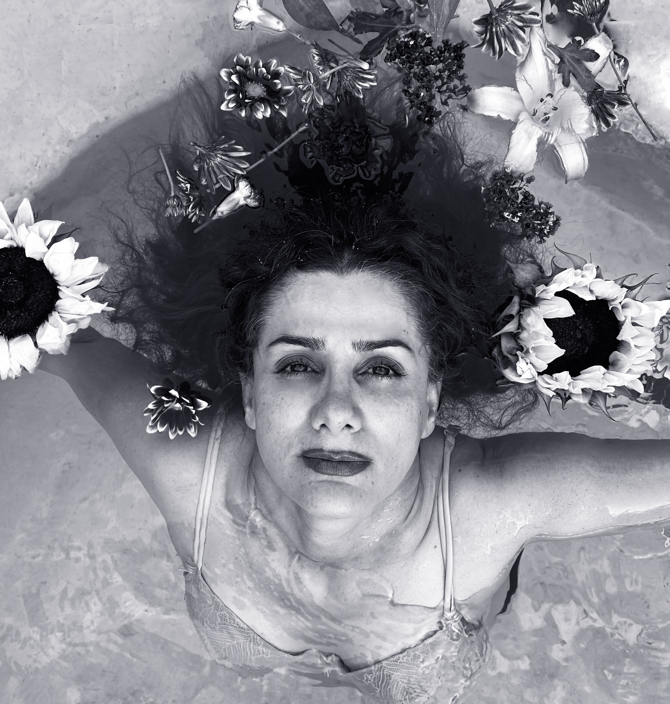

I would like to specify this page to my black and white photography that I took in my photo-40 class
Portraits are one of the most useful, intimate and powerful uses of photography. Depending on their purpose portraits can be flattering, informative or artistic. For this assignment I was to make a series of 3-5 meaningful fine art portraits. This was an exercise in making conceptual portraits through a fine art lens. Creativity was evident along with obvious control over manual camera settings F-Stop, Shutter Speed and ISO. All images are belong together in this cohesive series of work and are edited in Lightroom . .




<
<
Pegah Taheri
Contact: Pegah.taherieilaghi@sjsu.edu